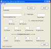

Tymeac development comprises four elements:
- The Processing Application Class that executes the application code.
- The Queue in which the Processing Application Class resides.
- The Function in which the Queue resides.
- The Client that calls the Tymeac Server.
Processing Application Class (or base Class)
Your Processing Application Class (base Class) must have a public static main() method
that accepts an Object array.
public static Object main(Object[] args) {}
public static void main(Object[] args) {} (has no returned data)
(We chose the method name, main(), simply because all Java programmers are familiar
with the standard application signature -- public static void main(String[] args).)
The Queue Thread passes an Object array (Object args[]) ) to your base class:
The first Object (arg[0]) is the optional input data from the
Tymeac Client contained in the Tymeac parameter,
- The second Object (arg[1]) is a reference (TymeacInterface) to the Tymeac Server. You
may use this reference for recursion processing or pass it along to another Class. (More
on this in the main document.)
Tymeac passes the return value back to the Synchronous Request in an Object array or on
to the Output Agent in an Object array.
The first object in the returned Object array is the result of Tymeac Processing.
This is always a String.
For a Synchronous Request:
Tymeac SR(0000)
- Tymeac is the prefix.
- SR stands for Synchronous Request.
- (nnnn) Return code, should be 0000. When the number in parentheses
is not zero, then check the return code document for the failure
reason.
The other objects in the returned Object array are the result of YOUR processing.
For an Asynchronous Request there is only one String object in the
returned Object array:
Tymeac AR(0000)[session id, request id]
- Tymeac is the prefix.
- AR stands for Asynchronous Request.
- (nnnn) Return code, should be 0000. When the number in parentheses
is not zero, then check the return code document for the failure
reason.
- The data in brackets are:
- Session Id -- The System time in milliseconds since
1970. MilliTime also appears on the start up and shut down messages It is the way to identify this session
of Tymeac. When you wish to inquire about the status of an asynchronous request, this Id
is necessary, see the Request Status Class.
- Request Id -- A unique number assigned to every request starting at one
(1). When you wish to inquire about the status or to cancel an asynchronous request, this
Id is necessary, see the Request Status Class.
Once again the signature looks like this: public static Object
main(Object[] args) {}
The public is so that Tymeac may find your base Class.
The static is so that no instance of your base Class is necessary, eliminating
constructors (called a Class Method).
The Queue Thread invokes your base Class with a:
Object return_data = ...invoke()...
The Output Agent Queue Thread invokes your Class with an:
...invoke()... ( no return value specified.)
That's really all there is to it. Just write a Hello World Class that looks like this:
package com.tymeac.serveruser;
public class HelloWorld {
public static Object main(Object[] args) {
return "Hello World";
}
}
Compile this class into the com/tymeac/serveruser directory.
Now you need to put this Processing Application Class into a Tymeac Queue.
Queues
All three parts of a Queue work together; Threads, Wait Lists, and your Processing
Application Class.
After you write the Processing Application Class, above, you define the
environment in which it is to execute, the Queue.
The client request goes into a Queue's Wait List. A Queue Thread
picks up the request, invokes your Processing Application Class, saves the return
Object from your Class and repeats that cycle until there are no more requests.
For a Synchronous Request, the array of return Objects is passed back to the client.
For an Asynchronous Request, the array of return Objects may go into an Output Agent
Queue's Wait List.
For the above HelloWorld, we'll set up one basic Queue, called HelloQueue. We'll use
the user class (TymeacUserQueues) to do this
by adding one entry.

(click to enlarge)
Compile the TymeacUserQueues class into the com/tymeac/serveruser directory.
Now you need to put this Queue into a Tymeac Function.
Functions
After you define the Queue, above, the component part of a request, you set up
the way by which Queues tie together, the Function.
The client requests a Function. The Function contains Queues. Each Queue
contains your Processing Application Class.
Each Function has one or more Queues associated with it. For this example, one
Queue called HelloWorld.
We'll use the user class (TymeacUserFunctions)
to do this by adding one entry.
(click to enlarge)
Compile the TymeacUserFunctions class into the com/tymeac/serveruser directory.
Now you need to build a Client.
Tymeac Client
The client access to the Tymeac Server is with the parameter the client passes to the
Tymeac Server and the communication code.
The parameter is Class TymeacParm. The
input Object (passed to all Processing Application Classes), is optional.
The communication code is the variable. We supply a framework Class, TySvrComm.
We'll use the following code to build a simple client.
import com.tymeac.base.*; // where TymeacParm lives
import com.tymeac.demo.*; // where TySvrComm lives
public class HelloClient {
public static void main(String[] args) {
// form a parameter for Tymeac
TymeacParm TP = new TymeacParm(
null,
// no input data
"HelloFunction", // function name
10,
// wait time in seconds
1);
// priority
// do a sync request
Object[] back = new
TySvrComm().syncRequest(TP);
// the first element is the result of processing
System.out.println(back[0]);
// the second element is the return string from the application
System.out.println(back[1]);
}
}
Compile the client class into a directory.
Alter one of the scripts we supply for client communication. (It's easier
that way.)
Start the RMI Registry and Tymeac Server.
Run the little fella.
That's how to develop multi-threading applications in a nut shell.
{kind=link}
{kind=link}